O objetivo deste documento é orientar o lojista sobre como acessar Backoffice da API Cielo Ecommerce. Descrevendo as funcionalidades, os métodos a serem utilizados, listando informações necessárias e provendo exemplos.
O Backoffice da API Cielo Ecommerce permite que o lojista possa acessar 4 menus com diferentes funcionalidades:
Para acessar o Backoffice, é necessário que o lojista realize login no Site Cielo, inserindo sua Afiliação (Nº de estabelecimento) e Usuário:

Em seguida é necessário incluir sua Senha:
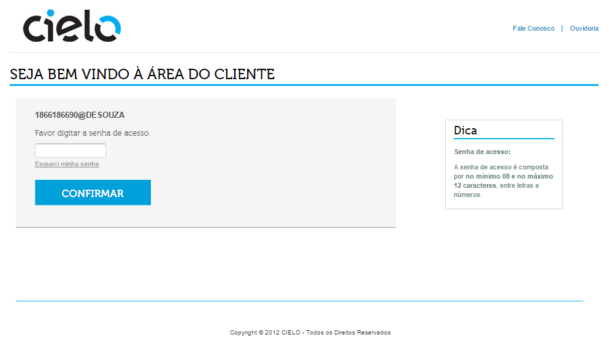
Na área de “Vendas Online” basta clicar em Webservice 3.0
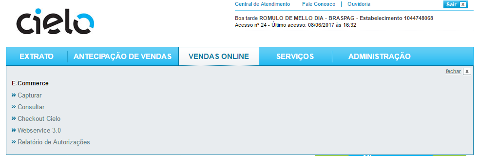
Você será direcionado para o Backoffice:
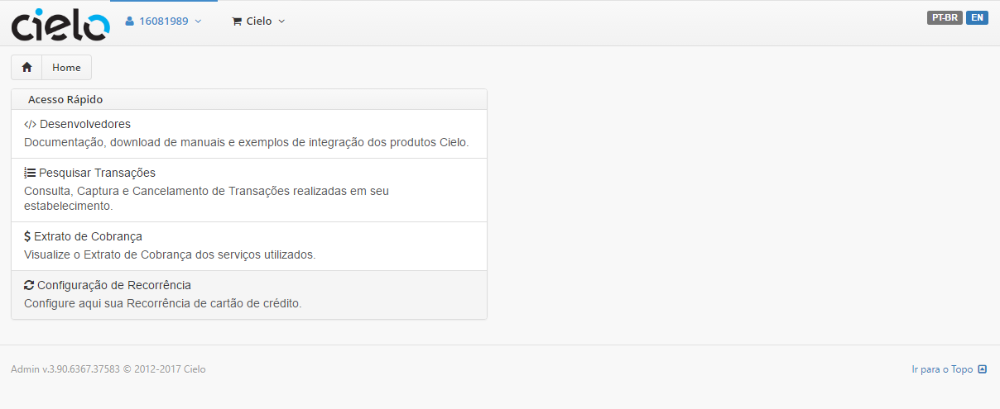
Nesta área você pode acessar as outras funcionalidades do Backoffice
Clique no link destacado abaixo:
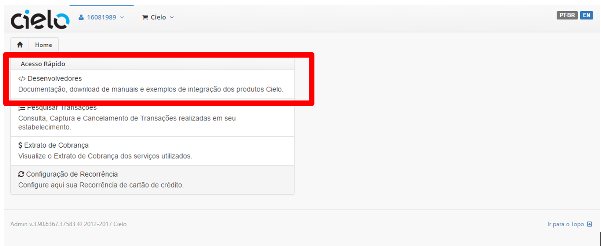
Você será redirecionado para https://www.cielo.com.br/desenvolvedores/
Ao acessar a opção abaixo:
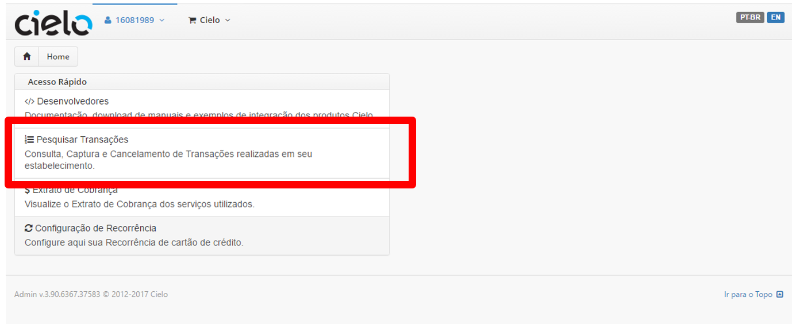
Você será direcionado a tela de pesquisa de transações:
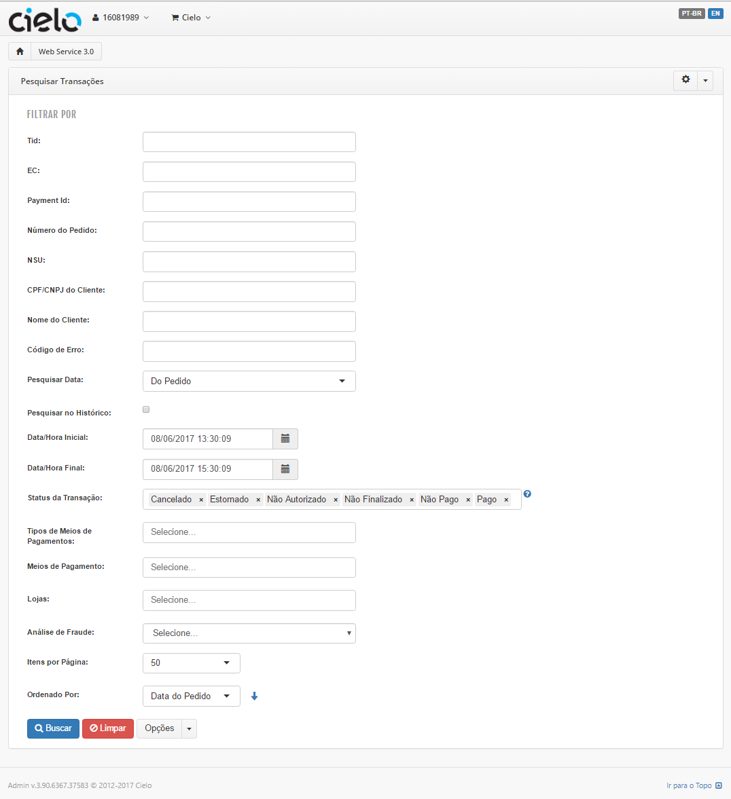
Essa tela permite buscar todas as transações realizadas com sucesso na API Cielo Ecommerce e realizar a captura ou cancelamento de transações.
Sobre os Filtros:
| Filtros | Descrição |
|---|---|
| Tid | Identificador da transação Cielo. Retornado via response e disponivel no site Cielo |
| EC | Número da Afiliação Cielo |
| Payment Id | Identificador da transação e-commerce |
| Número do Pedido | Número do pedido enviado pelo lojista |
| NSU | Identificação da autorização. Enviado via response |
| Código de Erro | Código retornado caso uma transação gere um erro. |
| Status da Transação | Cancelado - Transação cancelada pelo lojista Estornado - Transações canceladas com menos de 24 horas Não Autorizado - Transações negadas pelo Autorizador Cielo Não Pago - Transações autorizadas, mas não capturadas Pago - Transações capturadas |
| Tipos de meio de pagamento | Grupo de meios de pagamento como Boletos ou cartão de crédito. Não diferencia |
| Meios de pagamento | Meio de pagamento especifico usado na transação (EX: Boleto Bradesco) |
| Análise de Fraude | Qual o status de antifraude da transação no momento da pesquisa |
Os filtros podem ser combinados para realizar uma pesquisa personalizada.
Ao realizar uma pesquisa, é possível realizar a captura ou cancelamento de transações. Ao identificar a transação que deseje cancelar ou capturar:
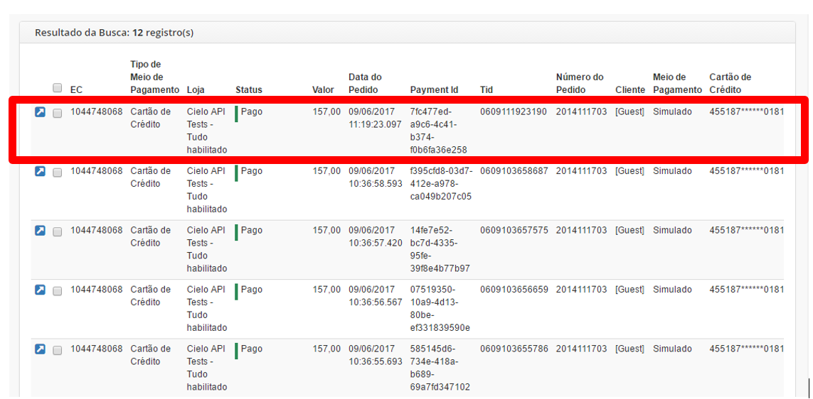
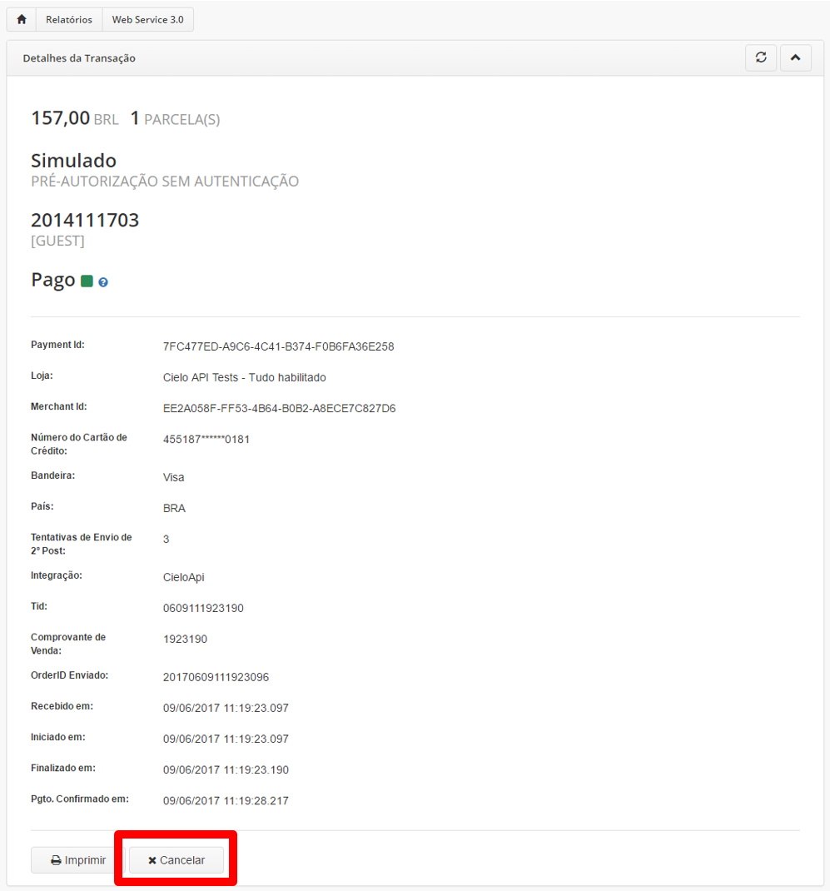
Basta realizar o cancelamento ou a Captura (O botão apresentado depende do status da transação no momento de exibição.
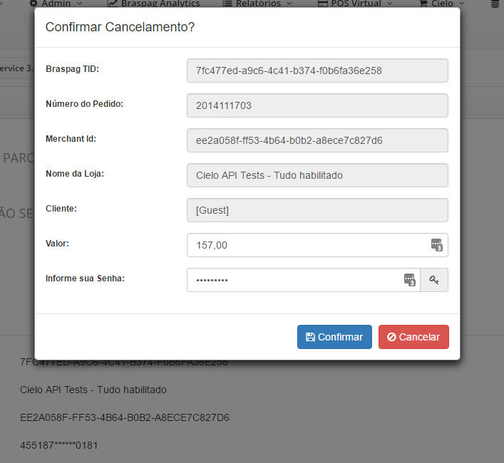
Confirme o valor a ser capturado ou cancelado. OBS: Alterar o valor no menu acima, define o comportamento do Cancelamento/Captura Parcial.
Ao realizar uma pesquisa, é possível realizar a captura ou cancelamento de transações em bloco. Basta selecionar quais serão modificadas e clique em “Opções”:
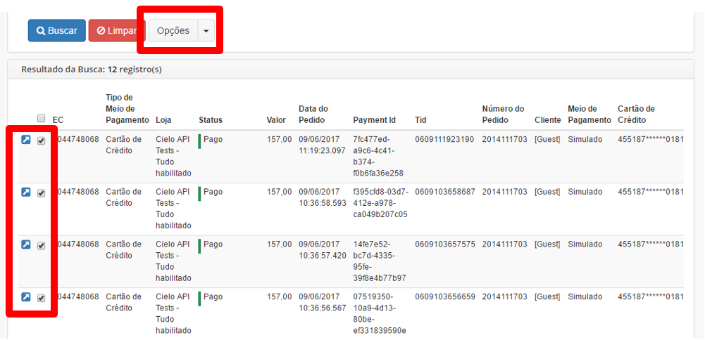
Selecione a opção desejada:
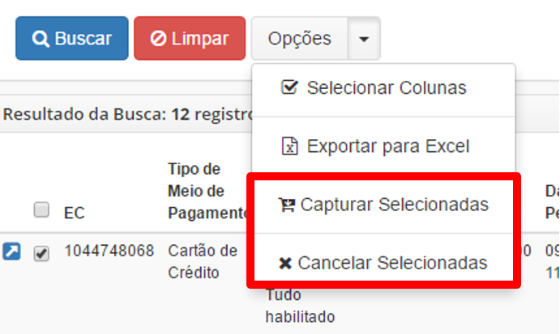
Ao selecionar a opção desejada, você será direcionado a uma tela onde poderá ser definido o valor da captura/cancelamento.
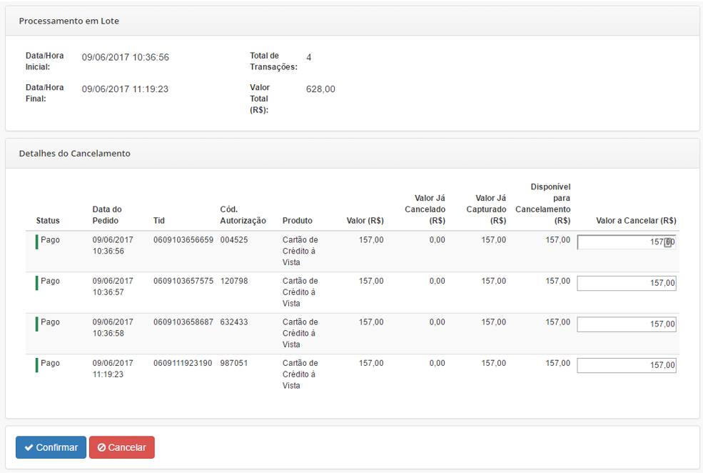
O Extrato de cobrança permite visualizar o valor a ser cobrado pela utilização das funcionalidades da API Cielo Ecommerce. Basta selecionar o mês e ano que se deseja exibir.
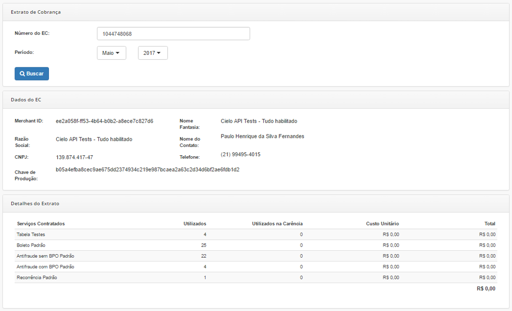
Para maiores informações a respeito dos serviços cobrados, entre em contato com nossa equipe de suporte:
A área de configuração da recorrência permite modificar o número e o intervalo das tentativas de transações. Essas tentativas ocorrem quando uma transação (dentro de uma recorrência) é negada. A API Cielo Ecommerce possui a inteligência para identificar esse cenário, e executar uma nova transação.
Acesse a tela de configuração e use o link “Tipo de pagamento”:
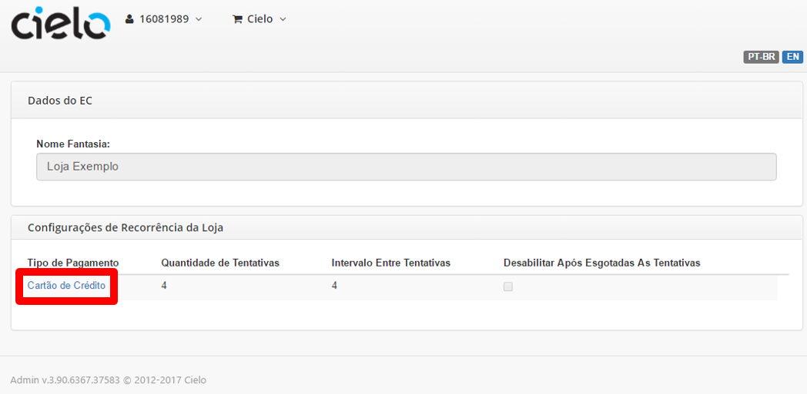
Você será direcionado para a tela de configuração:
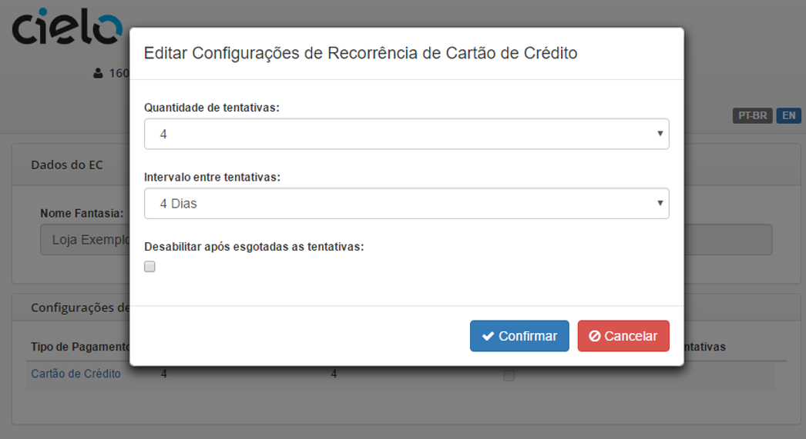
Nessa tela é possível alterar: